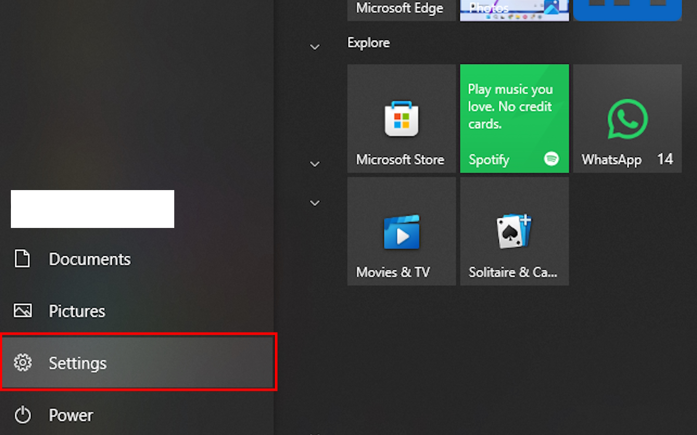
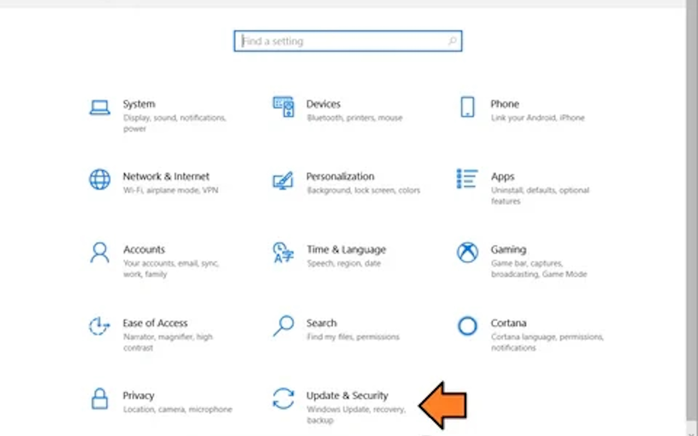
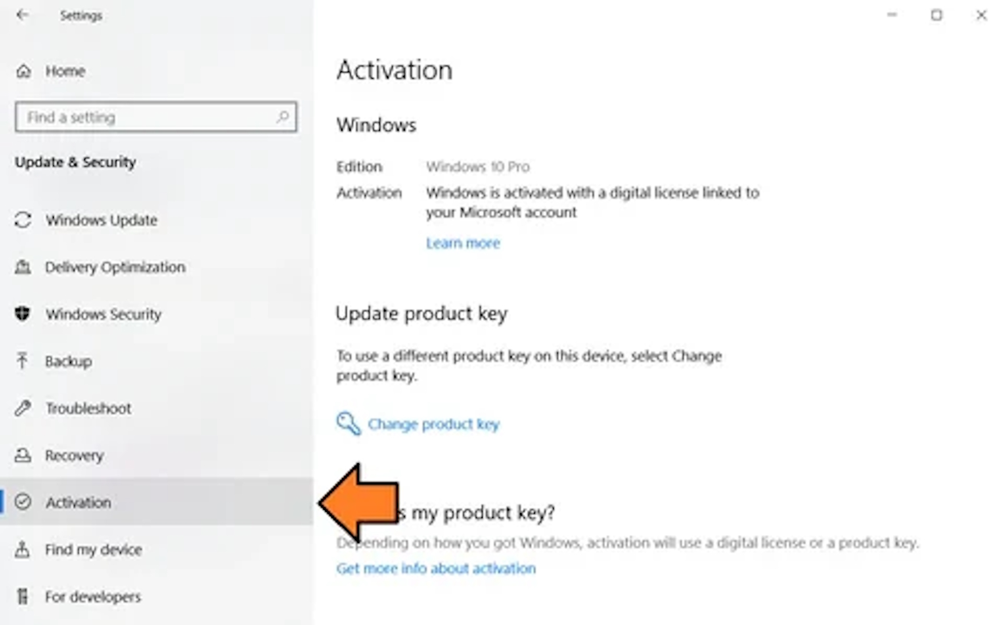
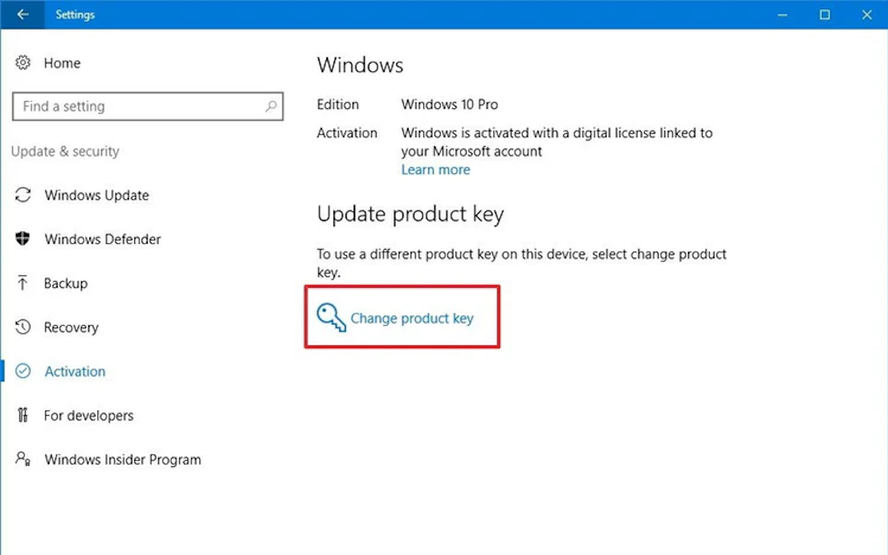
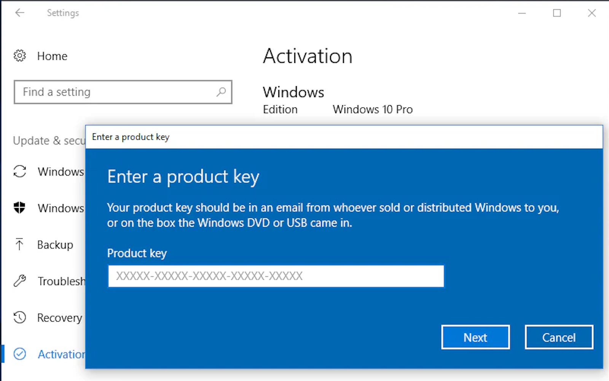
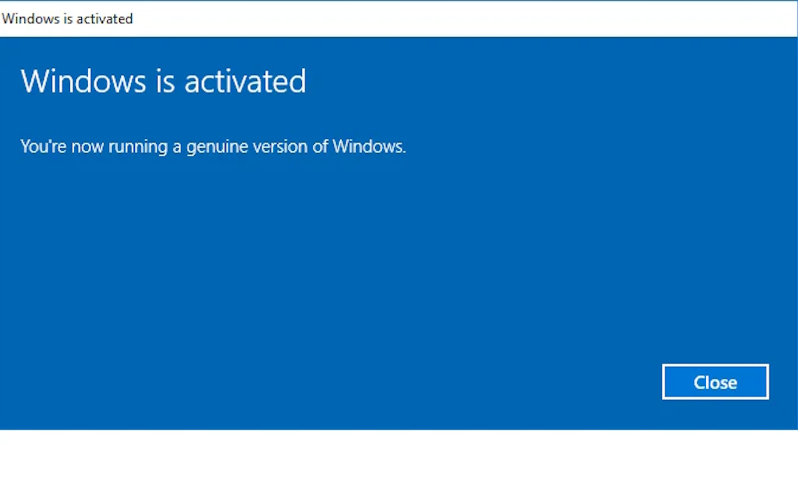
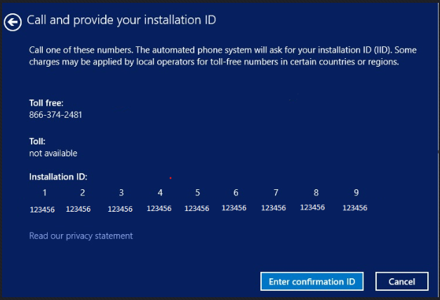
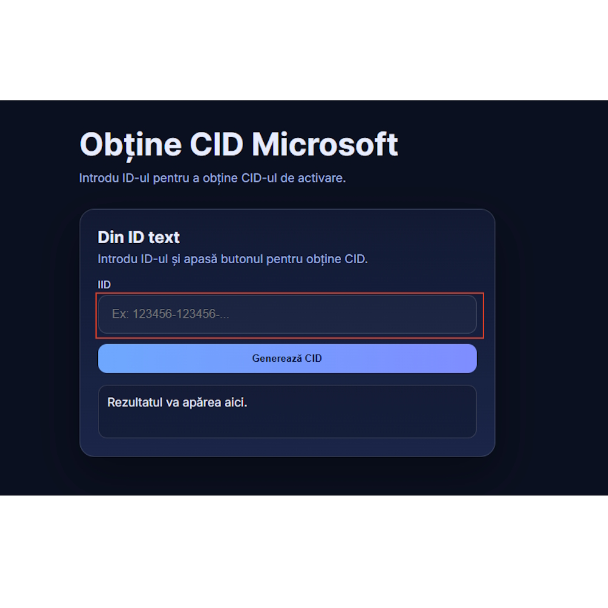
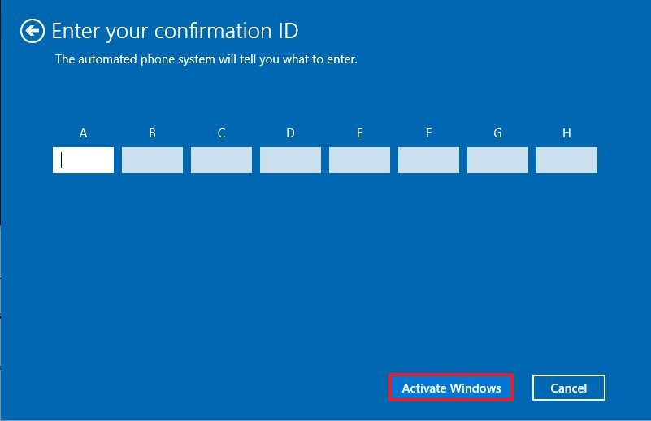

1. Faceți clic pe Start, mergeți la Setări

2. Selectați Actualizare și Securitate

3. Faceți clic pe fila Activare situată în partea stângă

4. Faceți clic pe Activare sau Schimbare cheie de produs

5. Introduceți cheia de licență pe care ați primit-o după achiziție

6. Gata, acum Windows-ul dvs. este complet activat și veți avea acces la funcțiile Premium.

Activare Telefonica
1. Daca va apare o fereastră asemanatoare trebuie să selectați „Activați prin telefon” și apoi vă va afișa ecranul ID de instalare cu un număr de telefon gratuit care este un sistem robot automat

2.Copiati ID-ul de instalare de pa pasul 2.

3.Accesati situl din linkul acesta:
GetCID4.Introduceti ID-ul de instalare copiat anterior in sectiunea hasurata.

5.Apsati pe "Get confirmation ID".
6.Gata acuma instroduceti ID-ul primit in fereastra de activare telefonica, iar produsul se va activa.

7.In unele cazuri daca produsul nu sa activat, va fi nevoie sa apasati pe butonul de Troubleshoot, iar dupa sa dati un restart la calculator.